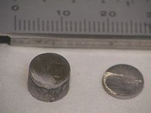

Technetium
|  | |||||||||||||||||||||||||||||||||||||||||||||||||||||||||||||||||||||||||||||||||||||||||||||||||||||||||||||||||||||||||||||||||||||||||||||||||||||||||||||||||||||||||||||||||||||||||||||||||||||||||||||||||||||||||||||||||||||
| General properties | |||||||||||||||||||||||||||||||||||||||||||||||||||||||||||||||||||||||||||||||||||||||||||||||||||||||||||||||||||||||||||||||||||||||||||||||||||||||||||||||||||||||||||||||||||||||||||||||||||||||||||||||||||||||||||||||||||||
|---|---|---|---|---|---|---|---|---|---|---|---|---|---|---|---|---|---|---|---|---|---|---|---|---|---|---|---|---|---|---|---|---|---|---|---|---|---|---|---|---|---|---|---|---|---|---|---|---|---|---|---|---|---|---|---|---|---|---|---|---|---|---|---|---|---|---|---|---|---|---|---|---|---|---|---|---|---|---|---|---|---|---|---|---|---|---|---|---|---|---|---|---|---|---|---|---|---|---|---|---|---|---|---|---|---|---|---|---|---|---|---|---|---|---|---|---|---|---|---|---|---|---|---|---|---|---|---|---|---|---|---|---|---|---|---|---|---|---|---|---|---|---|---|---|---|---|---|---|---|---|---|---|---|---|---|---|---|---|---|---|---|---|---|---|---|---|---|---|---|---|---|---|---|---|---|---|---|---|---|---|---|---|---|---|---|---|---|---|---|---|---|---|---|---|---|---|---|---|---|---|---|---|---|---|---|---|---|---|---|---|---|---|---|---|---|---|---|---|---|---|---|---|---|---|---|---|---|---|---|
| Name, symbol | technetium, Tc | ||||||||||||||||||||||||||||||||||||||||||||||||||||||||||||||||||||||||||||||||||||||||||||||||||||||||||||||||||||||||||||||||||||||||||||||||||||||||||||||||||||||||||||||||||||||||||||||||||||||||||||||||||||||||||||||||||||
| Pronunciation | /tɛkˈniːʃiəm/ tek-NEE-shee-əm |
||||||||||||||||||||||||||||||||||||||||||||||||||||||||||||||||||||||||||||||||||||||||||||||||||||||||||||||||||||||||||||||||||||||||||||||||||||||||||||||||||||||||||||||||||||||||||||||||||||||||||||||||||||||||||||||||||||
| Appearance | shiny gray metal | ||||||||||||||||||||||||||||||||||||||||||||||||||||||||||||||||||||||||||||||||||||||||||||||||||||||||||||||||||||||||||||||||||||||||||||||||||||||||||||||||||||||||||||||||||||||||||||||||||||||||||||||||||||||||||||||||||||
| Technetium in the periodic table | |||||||||||||||||||||||||||||||||||||||||||||||||||||||||||||||||||||||||||||||||||||||||||||||||||||||||||||||||||||||||||||||||||||||||||||||||||||||||||||||||||||||||||||||||||||||||||||||||||||||||||||||||||||||||||||||||||||
|
|||||||||||||||||||||||||||||||||||||||||||||||||||||||||||||||||||||||||||||||||||||||||||||||||||||||||||||||||||||||||||||||||||||||||||||||||||||||||||||||||||||||||||||||||||||||||||||||||||||||||||||||||||||||||||||||||||||
| Atomic number | 43 | ||||||||||||||||||||||||||||||||||||||||||||||||||||||||||||||||||||||||||||||||||||||||||||||||||||||||||||||||||||||||||||||||||||||||||||||||||||||||||||||||||||||||||||||||||||||||||||||||||||||||||||||||||||||||||||||||||||
| Standard atomic weight | [98] | ||||||||||||||||||||||||||||||||||||||||||||||||||||||||||||||||||||||||||||||||||||||||||||||||||||||||||||||||||||||||||||||||||||||||||||||||||||||||||||||||||||||||||||||||||||||||||||||||||||||||||||||||||||||||||||||||||||
| Element category | transition metal | ||||||||||||||||||||||||||||||||||||||||||||||||||||||||||||||||||||||||||||||||||||||||||||||||||||||||||||||||||||||||||||||||||||||||||||||||||||||||||||||||||||||||||||||||||||||||||||||||||||||||||||||||||||||||||||||||||||
| Group, block | group 7, d-block | ||||||||||||||||||||||||||||||||||||||||||||||||||||||||||||||||||||||||||||||||||||||||||||||||||||||||||||||||||||||||||||||||||||||||||||||||||||||||||||||||||||||||||||||||||||||||||||||||||||||||||||||||||||||||||||||||||||
| Period | period 5 | ||||||||||||||||||||||||||||||||||||||||||||||||||||||||||||||||||||||||||||||||||||||||||||||||||||||||||||||||||||||||||||||||||||||||||||||||||||||||||||||||||||||||||||||||||||||||||||||||||||||||||||||||||||||||||||||||||||
| Electron configuration | [Kr] 4d5 5s2 | ||||||||||||||||||||||||||||||||||||||||||||||||||||||||||||||||||||||||||||||||||||||||||||||||||||||||||||||||||||||||||||||||||||||||||||||||||||||||||||||||||||||||||||||||||||||||||||||||||||||||||||||||||||||||||||||||||||
| per shell | 2, 8, 18, 13, 2 | ||||||||||||||||||||||||||||||||||||||||||||||||||||||||||||||||||||||||||||||||||||||||||||||||||||||||||||||||||||||||||||||||||||||||||||||||||||||||||||||||||||||||||||||||||||||||||||||||||||||||||||||||||||||||||||||||||||
| Physical properties | |||||||||||||||||||||||||||||||||||||||||||||||||||||||||||||||||||||||||||||||||||||||||||||||||||||||||||||||||||||||||||||||||||||||||||||||||||||||||||||||||||||||||||||||||||||||||||||||||||||||||||||||||||||||||||||||||||||
| Phase | solid | ||||||||||||||||||||||||||||||||||||||||||||||||||||||||||||||||||||||||||||||||||||||||||||||||||||||||||||||||||||||||||||||||||||||||||||||||||||||||||||||||||||||||||||||||||||||||||||||||||||||||||||||||||||||||||||||||||||
| Melting point | 2430 K (2157 °C, 3915 °F) | ||||||||||||||||||||||||||||||||||||||||||||||||||||||||||||||||||||||||||||||||||||||||||||||||||||||||||||||||||||||||||||||||||||||||||||||||||||||||||||||||||||||||||||||||||||||||||||||||||||||||||||||||||||||||||||||||||||
| Boiling point | 4538 K (4265 °C, 7709 °F) | ||||||||||||||||||||||||||||||||||||||||||||||||||||||||||||||||||||||||||||||||||||||||||||||||||||||||||||||||||||||||||||||||||||||||||||||||||||||||||||||||||||||||||||||||||||||||||||||||||||||||||||||||||||||||||||||||||||
| Density near r.t. | 11 g·cm−3 | ||||||||||||||||||||||||||||||||||||||||||||||||||||||||||||||||||||||||||||||||||||||||||||||||||||||||||||||||||||||||||||||||||||||||||||||||||||||||||||||||||||||||||||||||||||||||||||||||||||||||||||||||||||||||||||||||||||
| Heat of fusion | 33.29 kJ·mol−1 | ||||||||||||||||||||||||||||||||||||||||||||||||||||||||||||||||||||||||||||||||||||||||||||||||||||||||||||||||||||||||||||||||||||||||||||||||||||||||||||||||||||||||||||||||||||||||||||||||||||||||||||||||||||||||||||||||||||
| Heat of vaporization | 585.2 kJ·mol−1 | ||||||||||||||||||||||||||||||||||||||||||||||||||||||||||||||||||||||||||||||||||||||||||||||||||||||||||||||||||||||||||||||||||||||||||||||||||||||||||||||||||||||||||||||||||||||||||||||||||||||||||||||||||||||||||||||||||||
| Molar heat capacity | 24.27 J·mol−1·K−1 | ||||||||||||||||||||||||||||||||||||||||||||||||||||||||||||||||||||||||||||||||||||||||||||||||||||||||||||||||||||||||||||||||||||||||||||||||||||||||||||||||||||||||||||||||||||||||||||||||||||||||||||||||||||||||||||||||||||
vapor pressure (extrapolated)
|
|||||||||||||||||||||||||||||||||||||||||||||||||||||||||||||||||||||||||||||||||||||||||||||||||||||||||||||||||||||||||||||||||||||||||||||||||||||||||||||||||||||||||||||||||||||||||||||||||||||||||||||||||||||||||||||||||||||
| Atomic properties | |||||||||||||||||||||||||||||||||||||||||||||||||||||||||||||||||||||||||||||||||||||||||||||||||||||||||||||||||||||||||||||||||||||||||||||||||||||||||||||||||||||||||||||||||||||||||||||||||||||||||||||||||||||||||||||||||||||
| Oxidation states | 7, 6, 5, 4, 3,[1] 2, 1,[1] −1, −3 (a strongly acidic oxide) | ||||||||||||||||||||||||||||||||||||||||||||||||||||||||||||||||||||||||||||||||||||||||||||||||||||||||||||||||||||||||||||||||||||||||||||||||||||||||||||||||||||||||||||||||||||||||||||||||||||||||||||||||||||||||||||||||||||
| Electronegativity | Pauling scale: 1.9 | ||||||||||||||||||||||||||||||||||||||||||||||||||||||||||||||||||||||||||||||||||||||||||||||||||||||||||||||||||||||||||||||||||||||||||||||||||||||||||||||||||||||||||||||||||||||||||||||||||||||||||||||||||||||||||||||||||||
| Ionization energies | 1st: 702 kJ·mol−1 2nd: 1470 kJ·mol−1 3rd: 2850 kJ·mol−1 |
||||||||||||||||||||||||||||||||||||||||||||||||||||||||||||||||||||||||||||||||||||||||||||||||||||||||||||||||||||||||||||||||||||||||||||||||||||||||||||||||||||||||||||||||||||||||||||||||||||||||||||||||||||||||||||||||||||
| Atomic radius | empirical: 136 pm | ||||||||||||||||||||||||||||||||||||||||||||||||||||||||||||||||||||||||||||||||||||||||||||||||||||||||||||||||||||||||||||||||||||||||||||||||||||||||||||||||||||||||||||||||||||||||||||||||||||||||||||||||||||||||||||||||||||
| Covalent radius | 147±7 pm | ||||||||||||||||||||||||||||||||||||||||||||||||||||||||||||||||||||||||||||||||||||||||||||||||||||||||||||||||||||||||||||||||||||||||||||||||||||||||||||||||||||||||||||||||||||||||||||||||||||||||||||||||||||||||||||||||||||
| Miscellanea | |||||||||||||||||||||||||||||||||||||||||||||||||||||||||||||||||||||||||||||||||||||||||||||||||||||||||||||||||||||||||||||||||||||||||||||||||||||||||||||||||||||||||||||||||||||||||||||||||||||||||||||||||||||||||||||||||||||
| Crystal structure | hexagonal close-packed (hcp)
|
||||||||||||||||||||||||||||||||||||||||||||||||||||||||||||||||||||||||||||||||||||||||||||||||||||||||||||||||||||||||||||||||||||||||||||||||||||||||||||||||||||||||||||||||||||||||||||||||||||||||||||||||||||||||||||||||||||
| Speed of sound thin rod | 16200 m·s−1 (at 20 °C) | ||||||||||||||||||||||||||||||||||||||||||||||||||||||||||||||||||||||||||||||||||||||||||||||||||||||||||||||||||||||||||||||||||||||||||||||||||||||||||||||||||||||||||||||||||||||||||||||||||||||||||||||||||||||||||||||||||||
| Thermal expansion | 7.1 µm·m−1·K−1[2] (at r.t.) | ||||||||||||||||||||||||||||||||||||||||||||||||||||||||||||||||||||||||||||||||||||||||||||||||||||||||||||||||||||||||||||||||||||||||||||||||||||||||||||||||||||||||||||||||||||||||||||||||||||||||||||||||||||||||||||||||||||
| Thermal conductivity | 50.6 W·m−1·K−1 | ||||||||||||||||||||||||||||||||||||||||||||||||||||||||||||||||||||||||||||||||||||||||||||||||||||||||||||||||||||||||||||||||||||||||||||||||||||||||||||||||||||||||||||||||||||||||||||||||||||||||||||||||||||||||||||||||||||
| Electrical resistivity | 200 nΩ·m (at 20 °C) | ||||||||||||||||||||||||||||||||||||||||||||||||||||||||||||||||||||||||||||||||||||||||||||||||||||||||||||||||||||||||||||||||||||||||||||||||||||||||||||||||||||||||||||||||||||||||||||||||||||||||||||||||||||||||||||||||||||
| Magnetic ordering | Paramagnetic | ||||||||||||||||||||||||||||||||||||||||||||||||||||||||||||||||||||||||||||||||||||||||||||||||||||||||||||||||||||||||||||||||||||||||||||||||||||||||||||||||||||||||||||||||||||||||||||||||||||||||||||||||||||||||||||||||||||
| CAS Registry Number | 7440-26-8 | ||||||||||||||||||||||||||||||||||||||||||||||||||||||||||||||||||||||||||||||||||||||||||||||||||||||||||||||||||||||||||||||||||||||||||||||||||||||||||||||||||||||||||||||||||||||||||||||||||||||||||||||||||||||||||||||||||||
| History | |||||||||||||||||||||||||||||||||||||||||||||||||||||||||||||||||||||||||||||||||||||||||||||||||||||||||||||||||||||||||||||||||||||||||||||||||||||||||||||||||||||||||||||||||||||||||||||||||||||||||||||||||||||||||||||||||||||
| Prediction | Dmitri Mendeleev (1871) | ||||||||||||||||||||||||||||||||||||||||||||||||||||||||||||||||||||||||||||||||||||||||||||||||||||||||||||||||||||||||||||||||||||||||||||||||||||||||||||||||||||||||||||||||||||||||||||||||||||||||||||||||||||||||||||||||||||
| Discovery and first isolation | Carlo Perrier and Emilio Segrè (1937) | ||||||||||||||||||||||||||||||||||||||||||||||||||||||||||||||||||||||||||||||||||||||||||||||||||||||||||||||||||||||||||||||||||||||||||||||||||||||||||||||||||||||||||||||||||||||||||||||||||||||||||||||||||||||||||||||||||||
| Most stable isotopes | |||||||||||||||||||||||||||||||||||||||||||||||||||||||||||||||||||||||||||||||||||||||||||||||||||||||||||||||||||||||||||||||||||||||||||||||||||||||||||||||||||||||||||||||||||||||||||||||||||||||||||||||||||||||||||||||||||||
|
|||||||||||||||||||||||||||||||||||||||||||||||||||||||||||||||||||||||||||||||||||||||||||||||||||||||||||||||||||||||||||||||||||||||||||||||||||||||||||||||||||||||||||||||||||||||||||||||||||||||||||||||||||||||||||||||||||||
{kind=link}
Technetium is a chemical element with symbol Tc and atomic number 43. It is the element with the lowest atomic number in the periodic table that has no stable isotopes: every form of it is radioactive. Nearly all technetium is produced synthetically, and only minute amounts are found in nature. Naturally occurring technetium occurs as a spontaneous fission product in uranium ore or by neutron capture in molybdenum ores. The chemical properties of this silvery gray, crystalline transition metal are intermediate between rhenium and manganese.
Many of technetium's properties were predicted by Dmitri Mendeleev before the element was discovered. Mendeleev noted a gap in his periodic table and gave the undiscovered element the provisional name ekamanganese (Em). In 1937, technetium (specifically the technetium-97 isotope) became the first predominantly artificial element to be produced, hence its name (from the Greek τεχνητός, meaning "artificial").
Its short-lived gamma ray-emitting nuclear isomer—technetium-99m—is used in nuclear medicine for a wide variety of diagnostic tests. Technetium-99 is used as a gamma ray-free source of beta particles. Long-lived technetium isotopes produced commercially are by-products of fission of uranium-235 in nuclear reactors and are extracted from nuclear fuel rods. Because no isotope of technetium has a half-life longer than 4.2 million years (technetium-98), its detection in 1952 in red giants, which are billions of years old, helped bolster the theory that stars can produce heavier elements.
Contents
[hide]History[edit]
Search for element 43[edit]
From the 1860s through 1871, early forms of the periodic table proposed by Dimitri Mendeleev contained a gap between molybdenum (element 42) and ruthenium (element 44). In 1871, Mendeleev predicted this missing element would occupy the empty place below manganese and therefore have similar chemical properties. Mendeleev gave it the provisional name ekamanganese (from eka-, the Sanskrit word for one, because the predicted element was one place down from the known element manganese.)[3]
Early mis-identifications[edit]
Many early researchers, both before and after the periodic table was published, were eager to be the first to discover and name the missing element; its location in the table suggested that it should be easier to find than other undiscovered elements.
| Year | Claimant | Suggested Name | Actual material |
|---|---|---|---|
| 1828 | Gottfried Osann | Polinium | Iridium |
| 1846 | R. Hermann | Ilmenium | Niobium-tantalum alloy |
| 1847 | Heinrich Rose | Pelopium[4] | Niobium-tantalum alloy |
| 1877 | Serge Kern | Davyum | Iridium-rhodium-iron alloy |
| 1896 | Prosper Barrière | Lucium | Yttrium |
| 1908 | Masataka Ogawa | Nipponium | Rhenium[5] |
Unreproducible results[edit]
German chemists Walter Noddack, Otto Berg, and Ida Tacke reported the discovery of element 75 and element 43 in 1925, and named element 43 masurium (after Masuria in eastern Prussia, now in Poland, the region where Walter Noddack's family originated).[6] The group bombarded columbite with a beam of electrons and deduced element 43 was present by examining X-ray diffraction spectrograms.[7] The wavelength of the X-rays produced is related to the atomic number by a formula derived by Henry Moseley in 1913. The team claimed to detect a faint X-ray signal at a wavelength produced by element 43. Later experimenters could not replicate the discovery, and it was dismissed as an error for many years.[8][9] Still, in 1933, a series of articles on the discovery of elements quoted the name masurium for element 43.[10][note 1] It is still debated as to whether the 1925 team actually did discover element 43.[11]
Official discovery and later history[edit]
The discovery of element 43 was finally confirmed in a December 1936 experiment at the University of Palermo in Sicily conducted by Carlo Perrier and Emilio Segrè.[12] In mid-1936, Segrè visited the United States, first Columbia University in New York and then the Lawrence Berkeley National Laboratory in California. He persuaded cyclotron inventor Ernest Lawrence to let him take back some discarded cyclotron parts that had become radioactive. Lawrence mailed him a molybdenum foil that had been part of the deflector in the cyclotron.[13]
Segrè enlisted his colleague Perrier to attempt to prove, through comparative chemistry, that the molybdenum activity was indeed from an element with Z = 43. They succeeded in isolating the isotopes technetium-95m and technetium-97.[14][15] University of Palermo officials wanted them to name their discovery "panormium", after the Latin name for Palermo, Panormus. In 1947[14] element 43 was named after the Greek word τεχνητός, meaning "artificial", since it was the first element to be artificially produced.[4][6] Segrè returned to Berkeley and met Glenn T. Seaborg. They isolated the metastable isotope technetium-99m, which is now used in some ten million medical diagnostic procedures annually.[16]
In 1952, astronomer Paul W. Merrill in California detected the spectral signature of technetium (specifically wavelengths of 403.1 nm, 423.8 nm, 426.2 nm, and 429.7 nm) in light from S-type red giants.[17] The stars were near the end of their lives, yet were rich in this short-lived element, meaning nuclear reactions within the stars must be producing it. This evidence was used to bolster the then-unproven theory that stars are where nucleosynthesis of the heavier elements occurs.[15] More recently, such observations provided evidence that elements were being formed by neutron capture in the s-process.[18]
Since its discovery, there have been many searches in terrestrial materials for natural sources of technetium. In 1962, technetium-99 was isolated and identified in pitchblende from the Belgian Congo in extremely small quantities (about 0.2 ng/kg);[18] there it originates as a spontaneous fission product of uranium-238. There is also evidence that the Oklo natural nuclear fission reactor produced significant amounts of technetium-99, which have since decayed into ruthenium-99.[18]
Characteristics[edit]
Physical properties[edit]
Technetium is a silvery-gray radioactive metal with an appearance similar to that of platinum. It is commonly obtained as a gray powder.[19] The crystal structure of the pure metal is hexagonal close-packed. Atomic technetium has characteristic emission lines at these wavelengths of light: 363.3 nm, 403.1 nm, 426.2 nm, 429.7 nm, and 485.3 nm.[20]
The metal form is slightly paramagnetic, meaning its magnetic dipoles align with external magnetic fields, but will assume random orientations once the field is removed.[21] Pure, metallic, single-crystal technetium becomes a type-II superconductor at temperatures below 7.46 K.[note 2][22] Below this temperature, technetium has a very high magnetic penetration depth, the largest among the elements apart from niobium.[23]
Chemical properties[edit]
Technetium is placed in the seventh group of the periodic table, between rhenium and manganese. As predicted by the periodic law, its chemical properties are therefore intermediate between those two elements. Of the two, technetium more closely resembles rhenium, particularly in its chemical inertness and tendency to form covalent bonds.[24] Unlike manganese, technetium does not readily form cations (ions with a net positive charge). Technetium exhibits nine oxidation states from -1 to +7, where the most common oxidation states include +4, +5, and +7.[25] Technetium dissolves in aqua regia, nitric acid, and concentrated sulfuric acid, but it is not soluble in hydrochloric acid of any concentration.[19]
To its multiplicity of valencies is attributed its ability to catalyse the destruction of hydrazine by nitric acid.[26] This caused a problem (resolved by process modifications) in the separation of plutonium from uranium in nuclear fuel processing, where hydrazine is used as a protective reductant to keep plutonium in the trivalent rather than the more stable tetravalent state. The problem was exacerbated by the mutually-enhanced solvent extraction of technetium and zirconium at the previous stage [Co-extraction of pertechnetate and zirconium by tri-n-butyl phosphate, John Garraway & Peter D. Wilson, Journal of the Less-Common Metals, 106(1), (1985) pp 183 – 191].[27]
Hydride and oxides[edit]
The reaction of technetium with hydrogen produces the negatively charged hydride TcH2−
9 ion, which has the same type of crystal structure as (is isostructural with) ReH2−
9. It consists of a trigonal prism with a technetium atom in the center and six hydrogen atoms
at the corners. Three more hydrogen atoms make a triangle lying
parallel to the base and crossing the prism in its center. Although
those hydrogen atoms are not equivalent geometrically, their electronic
structure is almost the same. This complex has a coordination number
of 9 (meaning that the technetium atom has nine neighbors), which is
the highest for a technetium complex. Two hydrogen atoms in the complex
can be replaced by sodium (Na+) or potassium (K+) ions.[28]
{kind=link}
Metallic technetium slowly tarnishes in moist air,[25] and in powder form, will burn in oxygen. Two oxides have been observed: TcO2 and Tc2O7. Under oxidizing conditions, which tend to strip electrons from atoms, technetium(VII) will exist as the pertechnetate ion, TcO−
4.[21][25]
At temperatures of 400–450 °C, technetium oxidizes to form the pale-yellow heptoxide:
- 4 Tc + 7 O2 → 2 Tc2O7
This compound adopts a centrosymmetric structure with two types of Tc-O bonds; their bond lengths are 167 and 184 pm, and the O-Tc-O angle is 180°.[29]
Technetium heptoxide is the precursor to sodium pertechnetate:[30]
- Tc2O7 + 2 NaOH → 2 NaTcO4 + H2O
Black-colored technetium dioxide (TcO2) can be produced by reduction of heptoxide with technetium or hydrogen.[31]
Pertechnetic acid (HTcO4) is produced by reacting Tc2O7 with water or oxidizing acids, such as nitric acid, concentrated sulfuric acid, aqua regia, or a mixture of nitric and hydrochloric acids.[32] The resulting dark red, hygroscopic (water absorbing) substance is a strong acid and easily donates protons. In concentrated sulfuric acid Tc(VII) tetraoxidotechnetate anion converts to the octahedral form of technetic(VII) acid TcO3(OH)(H2O)2.[33]
The pertechnate (tetroxidotechnetate) anion TcO−
4 consists of a tetrahedron with oxygens in the corners and a technetium atom in the center. Unlike permanganate (MnO−
4), it is only a weak oxidizing agent. Pertechnate is
often used as a convenient water-soluble source of technetium isotopes,
such as 99mTc, and as a catalyst.[34]
Sulfides, selenides, and tellurides[edit]
Technetium forms various sulfides. TcS2 is obtained by direct reaction of technetium and elemental sulfur, while Tc2S7 is formed from the pertechnic acid as follows:
- 2 HTcO4 + 7 H2S → Tc2S7 + 8 H2O
In this reaction technetium is reduced to Tc(IV) while excess sulfur forms a disulfide ligand. The produced technetium heptasulfide has a polymeric structure (Tc3(µ3–S)(S2)3S6)n with a core similar to Mo3(µ3–S)(S2)62−.[35]
Upon heating, technetium heptasulfide decomposes into disulfide and elementary sulfur:
- Tc2S7 → 2 TcS2 + 3 S
Analogous reactions occur with selenium and tellurium.[36]
{kind=link}
Technetium carbide and orthorhombic technetium metal phase[edit]
When small amounts of carbon are present in technetium metal, its ideal close-packed hexagonal crystal structure is distorted to orthorhombic technetium metal structure. Higher content of carbon (starting from 15–17% at.) provide complete conversion of technetium metal to cubic technetium carbide with approximate composition of Tc6C. The further increase in carbon content does not provide any change in technetium carbide structure.[37]
Clusters and organic complexes[edit]
Several technetium clusters are known, including Tc4, Tc6, Tc8 and Tc13.[38][39] The more stable Tc6 and Tc8 clusters have prism shapes where vertical pairs of Tc atoms are connected by triple bonds and the planar atoms by single bonds. Every technetium atom makes six bonds, and the remaining valence electrons can be saturated by one axial and two bridging ligand halogen atoms such as chlorine or bromine.[40]
{kind=link}
Technetium forms numerous organic complexes, which are relatively well-investigated because of their importance for nuclear medicine. Technetium carbonyl (Tc2(CO)10) is a white solid.[42] In this molecule, two technetium atoms are weakly bound to each other; each atom is surrounded by octahedra of five carbonyl ligands. The bond length between technetium atoms, 303 pm,[43][44] is significantly larger than the distance between two atoms in metallic technetium (272 pm). Similar carbonyls are formed by technetium's congeners, manganese and rhenium.[45]
A technetium complex[note 3] with an organic ligand (shown in the figure on right) is commonly used in nuclear medicine. It has a unique Tc-O functional group (moiety) oriented perpendicularly to the plane of the molecule, where the oxygen atom can be replaced by a nitrogen atom.[46]
Isotopes[edit]
Technetium, with atomic number (denoted Z) 43, is the lowest-numbered element in the periodic table that is exclusively radioactive. The second-lightest, exclusively radioactive element, promethium, has an atomic number of 61.[25] Atomic nuclei with an odd number of protons are less stable than those with even numbers, even when the total number of nucleons (protons + neutrons) is even.[47] Odd numbered elements therefore have fewer stable isotopes.
The most stable radioactive isotopes are technetium-98 with a half-life of 4.2 million years (Ma), technetium-97 (half-life: 2.6 Ma) and technetium-99 (half-life: 211,000 years).[48] Thirty other radioisotopes have been characterized with mass numbers ranging from 85 to 118.[48] Most of these have half-lives that are less than an hour; the exceptions are technetium-93 (half-life: 2.73 hours), technetium-94 (half-life: 4.88 hours), technetium-95 (half-life: 20 hours), and technetium-96 (half-life: 4.3 days).[49]
The primary decay mode for isotopes lighter than technetium-98 (98Tc) is electron capture, giving molybdenum (Z = 42).[48] For technetium-98 and heavier isotopes, the primary mode is beta emission (the emission of an electron or positron), giving ruthenium (Z = 44), with the exception that technetium-100 can decay both by beta emission and electron capture.[48][50]
Technetium also has numerous nuclear isomers, which are isotopes with one or more excited nucleons. Technetium-97m (97mTc; 'm' stands for metastability) is the most stable, with a half-life of 91 days (0.0965 MeV).[49] This is followed by technetium-95m (half-life: 61 days, 0.03 MeV), and technetium-99m (half-life: 6.01 hours, 0.142 MeV).[49] Technetium-99m only emits gamma rays and decays to technetium-99.[49]
Technetium-99 (99Tc) is a major product of the fission of uranium-235 (235U), making it the most common and most readily available isotope of technetium. One gram of technetium-99 produces 6.2×108 disintegrations a second (that is, 0.62 GBq/g).[21]
Occurrence and production[edit]
{kind=link}
Only minute traces of technetium occur naturally in the Earth's crust. This is due to the fact that technetium's half-life is only 4.2 million years. Over a thousand half-lives have passed since the formation on the Earth, so the probability that even one atom of primordial technetium should still exist is essentially zero. However, small amounts do exist as spontaneous fission products in uranium ores. A kilogram of uranium contains an estimated 1 nanogram (10−9 g) of technetium.[15][51][52] Some red giant stars with the spectral types S-, M-, and N contain an absorption line in their spectrum indicating the presence of technetium.[19][53] These red-giants are known informally as technetium stars.
Fission waste product[edit]
In contrast with its rare natural occurrence, bulk quantities of technetium-99 are produced each year from spent nuclear fuel rods, which contain various fission products. The fission of a gram of uranium-235 in nuclear reactors yields 27 mg of technetium-99, giving technetium a fission product yield of 6.1%.[21] Other fissile isotopes also produce similar yields of technetium, such as 4.9% from uranium-233 and 6.21% from plutonium-239.[54] About 49,000 TBq (78 metric tons) of technetium is estimated to have been produced in nuclear reactors between 1983 and 1994, which is by far the dominant source of terrestrial technetium.[55][56] Only a fraction of the production is used commercially.[note 4]
Technetium-99 is produced by the nuclear fission of both uranium-235 and plutonium-239. It is therefore present in radioactive waste and in the nuclear fallout of fission bomb explosions. Its decay, measured in becquerels per amount of spent fuel, is dominant after about 104 to 106 years after the creation of the nuclear waste.[55] From 1945 to 1994, an estimated 160 TBq (about 250 kg) of technetium-99 was released into the environment by atmospheric nuclear tests.[55][57] The amount of technetium-99 from nuclear reactors released into the environment up to 1986 is on the order of 1000 TBq (about 1600 kg), primarily by nuclear fuel reprocessing; most of this was discharged into the sea. Reprocessing methods have reduced emissions since then, but as of 2005 the primary release of technetium-99 into the environment is by the Sellafield plant, which released an estimated 550 TBq (about 900 kg) from 1995–1999 into the Irish Sea.[56] From 2000 onwards the amount has been limited by regulation to 90 TBq (about 140 kg) per year.[58] Discharge of technetium into the sea has resulted in some seafood containing minuscule quantities of this element. For example, European lobster and fish from west Cumbria contain about 1 Bq/kg of technetium.[59][60][note 5]
Fission product for commercial use[edit]
The metastable isotope technetium-99m is continuously produced as a fission product from the fission of uranium or plutonium in nuclear reactors.
Because used fuel is allowed to stand for several years before
reprocessing, all molybdenum-99 and technetium-99m will have decayed by
the time that the fission products are separated from the major actinides in conventional nuclear reprocessing. The liquid left after plutonium–uranium extraction (PUREX) contains a high concentration of technetium as TcO−
4 but almost all of this is technetium-99, not technetium-99m.[61]
The vast majority of the technetium-99m used in medical work is produced by irradiating dedicated highly enriched uranium targets in a reactor, extracting molybdenum-99 from the targets in reprocessing facilities,[62] and recovering at the diagnostic center the technetium-99m that is produced upon decay of molybdenum-99.[63][64] Molybdenum-99 in the form of molybdate MoO2−
4 is adsorbed onto acid alumina (Al
2O
3) in a shielded column chromatograph inside a technetium-99m generator
("technetium cow", also occasionally called a "molybdenum cow").
Molybdenum-99 has a half-life of 67 hours, so short-lived
technetium-99m (half-life: 6 hours), which results from its decay,
is being constantly produced.[15] The soluble pertechnetate TcO−
4 can then be chemically extracted by elution using a saline solution.
By irradiating a highly enriched uranium target to produce molybdenum-99, there is no need for the complex chemical steps which would be required to separate molybdenum from a fission product mixture. A drawback of this process is that it requires targets containing uranium-235, which are subject to the security precautions of fissile materials.[65][66]
Almost two-thirds of the world's supply comes from two reactors; the National Research Universal Reactor at Chalk River Laboratories in Ontario, Canada, and the High Flux Reactor at Nuclear Research and Consultancy Group in Petten, Netherlands. All major technetium-99m producing reactors were built in the 1960s and are close to the end of their lifetime. The two new Canadian Multipurpose Applied Physics Lattice Experiment reactors planned and built to produce 200% of the demand of technetium-99m relieved all other producers from building their own reactors. With the cancellation of the already tested reactors in 2008 the future supply of technetium-99m became very problematic.[67]
However the Chalk River reactor has been shut down for maintenance since August 2009, with an expected reopening in April 2010, and the Petten reactor had a 6-month scheduled maintenance shutdown beginning on Friday, February 19, 2010. With millions of procedures relying on technetium-99m every year, the low supply has left a gap, leaving some practitioners to revert to techniques not used for 20 years. Somewhat allaying this issue is an announcement from the Polish Maria research reactor that they have developed a technique to isolate technetium.[68] The reactor at Chalk River Laboratory reopened in August 2010 and the Petten reactor reopened September 2010.[69]
Waste disposal[edit]
The long half-life of technetium-99 and its ability to form an anionic species makes it a major concern for long-term disposal of radioactive waste. Many of the processes designed to remove fission products in reprocessing plants aim at cationic species like caesium (e.g., caesium-137) and strontium (e.g., strontium-90). Hence the pertechnetate is able to escape through these treatment processes. Current disposal options favor burial in continental, geologically stable rock. The primary danger with such a course is that the waste is likely to come into contact with water, which could leach radioactive contamination into the environment. The anionic pertechnetate and iodide do not adsorb well onto the surfaces of minerals, so they are likely to be washed away. By comparison plutonium, uranium, and caesium are much more able to bind to soil particles. Technetium could also be immobilized by some environments, such as lake bottom sediments, due to microbial activity;[70] for this reason, the environmental chemistry of technetium is an active area of research.[71]
An alternative disposal method, transmutation, has been demonstrated at CERN for technetium-99. This transmutation process is one in which the technetium (technetium-99 as a metal target) is bombarded with neutrons to form the short-lived technetium-100 (half-life = 16 seconds) which decays by beta decay to ruthenium-100. If recovery of usable ruthenium is a goal, an extremely pure technetium target is needed; if small traces of the minor actinides such as americium and curium are present in the target, they are likely to undergo fission and form more fission products which increase the radioactivity of the irradiated target. The formation of ruthenium-106 (half-life 374 days) from the 'fresh fission' is likely to increase the activity of the final ruthenium metal, which will then require a longer cooling time after irradiation before the ruthenium can be used.[72]
The actual separation of technetium-99 from spent nuclear fuel is a long process. During fuel reprocessing, it appears in the waste liquid, which is highly radioactive. After sitting for several years, the radioactivity falls to a point where extraction of the long-lived isotopes, including technetium-99, becomes feasible. Several chemical extraction processes are then used, yielding technetium-99 metal of high purity.[73]
Neutron activation[edit]
Molybdenum-99, which decays to form technetium-99m, can be formed by the neutron activation of molybdenum-98.[74] Other technetium isotopes are not produced in significant quantities by fission; when needed, they are manufactured by neutron irradiation of parent isotopes (for example, technetium-97 can be made by neutron irradiation of ruthenium-96).[75]
Particle accelerators[edit]
The feasibility of technetium-99m production with the 22-MeV-proton bombardment of a molybdenum-100 target in medical cyclotrons following the reaction 100Mo(p,2n)99mTc was demonstrated in 1971.[76] The recent shortages of medical technetium-99m reignited the interest in its production by proton bombardment of isotopically-enriched (>99.5%) molybdenum-100 targets.[77] Other particle accelerator-based isotope production techniques have been investigated to obtain molybdenum-99 from molybdenum-100 via (n,2n) or (γ,n) reactions.[78][79][80]
Applications[edit]
Nuclear medicine and biology[edit]
{kind=link}
Technetium-99m ("m" indicates that this is a metastable nuclear isomer) is used in radioactive isotope medical tests, for example as the radioactive part of a radioactive tracer that medical equipment can detect in the human body.[15] It is well suited to the role because it emits readily detectable 140 keV gamma rays, and its half-life is 6.01 hours (meaning that about 94% of it decays to technetium-99 in 24 hours).[21] The chemistry of technetium allows it to be bound to a variety of non-radioactive compounds. It is the entire compound that determines how it is metabolized. Therefore a single radioactive isotope can be used for a multitude of diagnostic tests. There are more than 50 commonly used radiopharmaceuticals based on technetium-99m for imaging and functional studies of the brain, myocardium, thyroid, lungs, liver, gallbladder, kidneys, skeleton, blood, and tumors.[81]
The longer-lived isotope technetium-95m, with a half-life of 61 days, is used as a radioactive tracer to study the movement of technetium in the environment and in plant and animal systems.[82]
Industrial and chemical[edit]
Technetium-99 decays almost entirely by beta decay, emitting beta particles with consistent low energies and no accompanying gamma rays. Moreover, its long half-life means that this emission decreases very slowly with time. It can also be extracted to a high chemical and isotopic purity from radioactive waste. For these reasons, it is a National Institute of Standards and Technology (NIST) standard beta emitter, and is therefore used for equipment calibration.[83] Technetium-99 has also been proposed for use in optoelectronic devices and nanoscale nuclear batteries.[84]
Like rhenium and palladium, technetium can serve as a catalyst. For some reactions, for example the dehydrogenation of isopropyl alcohol, it is a far more effective catalyst than either rhenium or palladium. However, its radioactivity is a major problem in finding safe catalytic applications.[85]
When steel is immersed in water, adding a small concentration (55 ppm) of potassium pertechnetate(VII) to the water protects the steel from corrosion, even if the temperature is raised to 250 °C.[86] For this reason, pertechnetate has been used as a possible anodic corrosion inhibitor for steel, although technetium's radioactivity poses problems which limit this application to self-contained systems.[87] While (for example) CrO2−
4 can also inhibit corrosion, it requires a concentration
ten times as high. In one experiment, a specimen of carbon steel was
kept in an aqueous solution of pertechnetate for 20 years and was
still uncorroded.[86]
The mechanism by which pertechnetate prevents corrosion is not well
understood, but seems to involve the reversible formation of a thin
surface layer. One theory holds that the pertechnetate reacts with the
steel surface to form a layer of technetium dioxide which prevents further corrosion; the same effect explains how iron powder can be used to remove pertechnetate from water. (Activated carbon
can also be used for the same effect.) The effect disappears rapidly if
the concentration of pertechnetate falls below the minimum
concentration or if too high a concentration of other ions is added.[88]
As noted, the radioactive nature of technetium (3 MBq per liter at the concentrations required) makes this corrosion protection impractical in almost all situations. Nevertheless, corrosion protection by pertechnetate ions was proposed (but never adopted) for use in boiling water reactors.[88]
Precautions[edit]
Technetium plays no natural biological role and is not normally found in the human body.[19] Technetium is produced in quantity by nuclear fission, and spreads more readily than many radionuclides. It appears to have low chemical toxicity. For example, no significant change in blood formula, body and organ weights, and food consumption could be detected for rats which ingested up to 15 µg of technetium-99 per gram of food for several weeks.[89] The radiological toxicity of technetium (per unit of mass) is a function of compound, type of radiation for the isotope in question, and the isotope's half-life.[90]
All isotopes of technetium must be handled carefully. The most common isotope, technetium-99, is a weak beta emitter; such radiation is stopped by the walls of laboratory glassware. The primary hazard when working with technetium is inhalation of dust; such radioactive contamination in the lungs can pose a significant cancer risk. For most work, careful handling in a fume hood is sufficient; a glove box is not needed.[91]
Notes[edit]
- Jump up ^ In 1998 John T. Armstrong of the National Institute of Standards and Technology
ran "computer simulations" of the 1925 experiments and obtained results
quite close to those reported by the Noddack team. "Using
first-principles X-ray-emission spectral-generation algorithms developed
at NIST, I simulated the X-ray spectra that would be expected for Van
Assche's initial estimates of the Noddacks' residue compositions. The
first results were surprisingly close to their published spectrum! Over
the next couple of years, we refined our reconstruction of their
analytical methods and performed more sophisticated simulations. The
agreement between simulated and reported spectra improved further. Our
calculation of the amount of element 43 required to produce their
spectrum is quite similar to the direct measurements of natural
technetium abundance in uranium ore published in 1999 by Dave Curtis and
colleagues at Los Alamos. We can find no other plausible explanation
for the Noddacks' data than that they did indeed detect fission
"masurium."
Armstrong, J. T. (2003). "Technetium". Chemical & Engineering News 81 (36): 110. doi:10.1021/cen-v081n036.p110. - Jump up ^ Irregular crystals and trace impurities raise this transition temperature to 11.2 K for 99.9% pure technetium powder.(Schwochau 2000, p. 96)
- Jump up ^ 3,3,9,9-tetramethyl-4,8-diazaundecane-2,10-dione dioxime Hexamethyipropyleneamine Oxime (HMPAO)
- Jump up ^ As of 2005[update], technetium-99 in the form of ammonium pertechnate is available to holders of an Oak Ridge National Laboratory permit:Hammond, C. R. (2004). "The Elements". Handbook of Chemistry and Physics (81st ed.). CRC press. ISBN 0-8493-0485-7.
- Jump up ^ The anaerobic, spore-forming bacteria in the Clostridium genus are able to reduce Tc(VII) to Tc(IV). Clostridia bacteria play a role in reducing iron, manganese, and uranium, thereby affecting these elements' solubility in soil and sediments. Their ability to reduce technetium may determine a large part of mobility of technetium in industrial wastes and other subsurface environments. Francis, A. J.; Dodge, C. J.; Meinken, G. E. (2002). "Biotransformation of pertechnetate by Clostridia". Radiochimica Acta 90 (9–11): 791–797. doi:10.1524/ract.2002.90.9-11_2002.791.
References[edit]
- ^ Jump up to: a b "Technetium: technetium(III) iodide compound data". OpenMOPAC.net. Retrieved 2007-12-10.
- Jump up ^ http://www.owlnet.rice.edu/~msci301/ThermalExpansion.pdf
- Jump up ^ Jonge, F. A. A.; Pauwels, EK (1996). "Technetium, the missing element". European Journal of Nuclear Medicine 23 (3): 336–44. doi:10.1007/BF00837634. PMID 8599967.
- ^ Jump up to: a b Holden, N. E. "History of the Origin of the Chemical Elements and Their Discoverers". Brookhaven National Laboratory. Retrieved 2009-05-05.
- Jump up ^ Yoshihara, H. K. (2004). "Discovery of a new element 'nipponium': re-evaluation of pioneering works of Masataka Ogawa and his son Eijiro Ogawa". Atomic spectroscopy (Spectrochim. Acta, Part B) 59 (8): 1305–1310. Bibcode:2004AcSpe..59.1305Y. doi:10.1016/j.sab.2003.12.027.
- ^ Jump up to: a b van der Krogt, P. "Elentymolgy and Elements Multidict, "Technetium"". Retrieved 2009-05-05.
- Jump up ^ Emsley 2001, p. 423
- Jump up ^ Armstrong, J. T. (2003). "Technetium". Chemical & Engineering News. doi:10.1021/cen-v081n036.p110. Retrieved 2009-11-11.
- Jump up ^ Nies, K. A. (2001). "Ida Tacke and the warfare behind the discovery of fission". Retrieved 2009-05-05.
- Jump up ^ Weeks, M. E. (1933). "The discovery of the elements. XX. Recently discovered elements". Journal of Chemical Education 10 (3): 161–170. Bibcode:1933JChEd..10..161W. doi:10.1021/ed010p161.
- Jump up ^ Zingales, R. (2005). "From Masurium to Trinacrium: The Troubled Story of Element 43". Journal of Chemical Education 82 (2): 221–227. Bibcode:2005JChEd..82..221Z. doi:10.1021/ed082p221.
- Jump up ^ Heiserman 1992, p. 164
- Jump up ^ Segrè, Emilio (1993). A Mind Always in Motion: the Autobiography of Emilio Segrè. Berkeley, California: University of California Press. pp. 115–118. ISBN 0520076273.
- ^ Jump up to: a b Perrier, C.; Segrè, E. (1947). "Technetium: The Element of Atomic Number 43". Nature 159 (4027): 24. Bibcode:1947Natur.159...24P. doi:10.1038/159024a0. PMID 20279068.
- ^ Jump up to: a b c d e Emsley, J. (2001). Nature's Building Blocks: An A-Z Guide to the Elements. New York: Oxford University Press. pp. 422–425. ISBN 0-19-850340-7.
- Jump up ^ "Chapter 1.2: Early Days at the Berkeley Radiation Laboratory". The transuranium people: The inside story. University of California, Berkeley & Lawrence Berkeley National Laboratory. 2000. p. 15. ISBN 1-86094-087-0.
- Jump up ^ Merrill, P. W. (1952). "Technetium in the stars". Science 115 (2992): 479–89 [484]. Bibcode:1952Sci...115..479.. doi:10.1126/science.115.2992.479.
- ^ Jump up to: a b c Schwochau 2000, pp. 7–9
- ^ Jump up to: a b c d Hammond, C. R. (2004). "The Elements". Handbook of Chemistry and Physics (81st ed.). CRC press. ISBN 0-8493-0485-7.
- Jump up ^ Lide, David R. (2004–2005). "Line Spectra of the Elements". The CRC Handbook. CRC press. pp. 10–70 (1672). ISBN 978-0-8493-0595-5.
- ^ Jump up to: a b c d e Rimshaw, S. J. (1968). Hampel, C. A., ed. The Encyclopedia of the Chemical Elements. New York: Reinhold Book Corporation. pp. 689–693.
- Jump up ^ Schwochau 2000, p. 96
- Jump up ^ Autler, S. H. (1968). "Technetium as a Material for AC Superconductivity Applications" (PDF). Proceedings of the 1968 Summer Study on Superconducting Devices and Accelerators. Retrieved 2009-05-05.
- Jump up ^ Greenwood 1997, p. 1044
- ^ Jump up to: a b c d Husted, R. (2003-12-15). "Technetium". Periodic Table of the Elements. Los Alamos National Laboratory. Retrieved 2009-10-11.
- Jump up ^ Garraway, John (1984). "The technetium-catalysed oxidation of hydrazine by nitric acid". Journal of the Less Common Metals 97: 191–203. doi:10.1016/0022-5088(84)90023-7.
- Jump up ^ Garraway, J. (1985). "Coextraction of pertechnetate and zirconium by tri-n-butyl phosphate". Journal of the Less Common Metals 106 (1): 183–192. doi:10.1016/0022-5088(85)90379-0.
- Jump up ^ Schwochau 2000, p. 146
- Jump up ^ Krebs, B. (1969). "Technetium(VII)-oxid: Ein Übergangsmetalloxid mit Molekülstruktur im festen Zustand". Angewandte Chemie 81 (9): 328–329. doi:10.1002/ange.19690810905.
- Jump up ^ Herrell, A. Y.; Busey, R. H.; Gayer, K. H. (1977). Technetium(VII) Oxide, in Inorganic Syntheses XVII. pp. 155–158. ISBN 0-07-044327-0.
- Jump up ^ Schwochau 2000, p. 108
- Jump up ^ Schwochau 2000, p. 127
- Jump up ^ Poineau F; Weck PF; German K; Maruk A; Kirakosyan G; Lukens W; Rego DB et al. (2010). "Speciation of heptavalent technetium in sulfuric acid: structural and spectroscopic studies" (PDF). Dalton Transactions 39 (37): 8616–8619. doi:10.1039/C0DT00695E. PMID 20730190.
- Jump up ^ Schwochau 2000, pp. 127–136
- Jump up ^ Lukens, W. W.; Bucher, Jerome J.; Shuh, David K.; Edelstein, Norman M. (2005). "Evolution of Technetium Speciation in Reducing Grout Waste Forms" (PDF). Environmental Science & Technology 39 (20): 8064–8070. Bibcode:2005EnST...39.8064L. doi:10.1021/es050155c. PMID 16295876.
- Jump up ^ Schwochau 2000, pp. 112–113
- Jump up ^ German, K. E. et al. (2005). "Tc Carbide and New Orthorhombic Tc Metal Phase" (PDF). Journal of Nuclear and Radiochemical Sciences 39 (20): 211–214.
- Jump up ^ Cotton 1999, p. 985
- Jump up ^ Löwdin, P.-O.; Brändas, E.; Kryachko, E. S. (2003). Fundamental world of quantum chemistry: a tribute to the memory of Per-Olov Löwdin 2. Springer. p. 479. ISBN 1-4020-1286-1.
- Jump up ^ German, K. E.; Kryutchkov, S. V. (2002). "Polynuclear Technetium Halide Clusters". Russian Journal of Inorganic Chemistry 47 (4): 578–583.
- Jump up ^ 3,3,9,9-Tetramethyl-4,8-diazaundecane-2,10-dione dioximato-oxotechnetium(V) [TcO(pnao)]; Schwochau 2000, p. 176
- Jump up ^ Hileman, J. C.; Huggins, D. K.; Kaesz, H. D. (1961). "Technetium carbonyl". Journal of the American Chemical Society 83 (13): 2953–2954. doi:10.1021/ja01474a038.
- Jump up ^ Bailey, M. F.; Dahl, Lawrence F. (1965). "The Crystal Structure of Ditechnetium Decacarbonyl". Inorganic Chemistry 4 (8): 1140–1145. doi:10.1021/ic50030a011.
- Jump up ^ Wallach, D. (1962). "Unit cell and space group of technetium carbonyl, Tc2(CO)10". Acta Crystallographica 15 (10): 1058. doi:10.1107/S0365110X62002789.
- Jump up ^ Schwochau 2000, pp. 286, 328
- Jump up ^ Jurisson, S.; Schlemper, E. O.; Troutner, D. E.; Canning, L. R.; Nowotnik, D. P.; Neirinckx, R. D. (1986). "Synthesis, characterization, and x-ray structural determinations of technetium(V)-oxo-tetradentate amine oxime complexes". Inorganic Chemistry 25 (4): 543–549. doi:10.1021/ic00224a031.
- Jump up ^ Clayton, D. D. (1983). Principles of stellar evolution and nucleosynthesis: with a new preface. University of Chicago Press. p. 547. ISBN 0-226-10953-4.
- ^ Jump up to: a b c d NNDC contributors (2008). Sonzogni, A. A., ed. "Chart of Nuclides". New York: National Nuclear Data Center, Brookhaven National Laboratory. Retrieved 2009-11-11.
- ^ Jump up to: a b c d Holden, N. E. (2006). Lide. D. R., ed. Handbook of Chemistry and Physics (87th ed.). Boca Raton, Florida: CRC Press, Taylor & Francis Group. pp. 11–88–11–89. ISBN 0-8493-0487-3.
- Jump up ^ Lide, David R., ed. (2004–2005). "Table of the isotopes". The CRC Handbook of Chemistry and Physics. CRC press.
- Jump up ^ Dixon, P.; Curtis, David B.; Musgrave, John; Roensch, Fred; Roach, Jeff; Rokop, Don (1997). "Analysis of Naturally Produced Technetium and Plutonium in Geologic Materials". Analytical Chemistry 69 (9): 1692–9. doi:10.1021/ac961159q. PMID 21639292.
- Jump up ^ Curtis, D.; Fabryka-Martin, June; Dixon, Paul; Cramer, Jan (1999). "Nature's uncommon elements: plutonium and technetium". Geochimica et Cosmochimica Acta 63 (2): 275. Bibcode:1999GeCoA..63..275C. doi:10.1016/S0016-7037(98)00282-8.
- Jump up ^ Moore, C.E. (1951). "Technetium in the Sun". Science (New York, N.Y.) 114 (2951): 59–61. Bibcode:1951Sci...114...59M. doi:10.1126/science.114.2951.59. PMID 17782983.
- Jump up ^ Schwochau 2000, pp. 374–404
- ^ Jump up to: a b c Yoshihara, K. (1996). "Technetium in the Environment". In K. Yoshihara; T. Omori. Topics in Current Chemistry: Technetium and Rhenium 176. Berlin Heidelberg: Springer-Verlag. pp. 17–35. doi:10.1007/3-540-59469-8_2. ISBN 978-3-540-59469-7.
- ^ Jump up to: a b Garcia-Leon, M. (2005). "99Tc in the Environment: Sources, Distribution and Methods" (PDF). Journal of Nuclear and Radiochemical Sciences 6 (3): 253–259.
- Jump up ^ Desmet, G.; Myttenaere, C. (1986). Technetium in the environment. Springer. p. 69. ISBN 0-85334-421-3.
- Jump up ^ Tagami, K. (2003). "Technetium-99 Behaviour in the Terrestrial Environment — Field Observations and Radiotracer Experiments". Journal of Nuclear and Radiochemical Sciences 4: A1–A8. doi:10.14494/jnrs2000.4.a1.
- Jump up ^ Szefer, P.; Nriagu, J. O. (2006). Mineral components in foods. CRC Press. p. 403. ISBN 0-8493-2234-0.
- Jump up ^ Harrison, J. D.; Phipps, A. (2001). "Gut transfer and doses from environmental technetium". J. Radiol. Prot. 21 (1): 9–11. Bibcode:2001JRP....21....9H. doi:10.1088/0952-4746/21/1/004. PMID 11281541.
- Jump up ^ Schwochau 2000, p. 39
- Jump up ^ Moore, P.W. (April 1984). "Technetium-99 in generator systems" (PDF). Journal of nuclear medicine 25 (4): 499–502. PMID 6100549. Retrieved 2012-05-11.
- Jump up ^ US 3799883, Hirofumi Arino, "Silver coated charcoal step", issued March 26, 1974, assigned to Union Carbide Corporation
- Jump up ^ Committee on Medical Isotope Production Without Highly Enriched Uranium (2009). Medical Isotope Production Without Highly Enriched Uranium. National Academies Press. p. vii. ISBN 0-309-13040-9. Retrieved 2009-08-27.
- Jump up ^ Lützenkirchen, K.-R. "Nuclear forensics sleuths trace the origin of trafficked material". Los Alamos National Laboratory. Retrieved 2009-11-11.
- Jump up ^ Snelgrove, J. L.; Hofman, G. L. (1995). "Development and Processing of LEU Targets for Mo-99 Production" (PDF). ANL.gov, Presented at the 1995 International Meeting on Reduced Enrichment for Research and Test Reactors, September 18–21, 1994, Paris, France. Retrieved 2009-05-05.
- Jump up ^ Thomas, Gregory S.; Maddahi, Jamshid (2010). "The technetium shortage". Journal of Nuclear Cardiology 17 (6): 993–8. doi:10.1007/s12350-010-9281-8. PMID 20717761.
- Jump up ^ Wals, M. L. (February 16, 2010). "New Source Of an Isotope In Medicine Is Found". New York Times.
- Jump up ^ Shaw, Gina (October 2010). "Medical Isotope Shortage Nearing End—For Now". Clinical Oncology News. Retrieved 2010-11-02.
- Jump up ^ German, Konstantin E.; Firsova, E.V.; Peretrukhin, V. F.; Khizhnyak, T. V.; Simonoff, M. (2003). "Bioaccumulation of Tc, Pu, and Np on Bottom Sediments in Two Types of Freshwater Lakes of the Moscow Oblast". Radiochemistry 45 (6): 250–6. doi:10.1023/A:1026008108860. ISSN 1608-3288.
- Jump up ^ Shaw, G. (2007). Radioactivity in the terrestrial environment. Elsevier. p. 147. ISBN 0-08-043872-5.
- Jump up ^ Altomare, P; Bernardi (1979). Alternative disposal concepts for high-level and transuranic radioactive waste disposal. US Environmental Protection Agency.
- Jump up ^ Schwochau 2000, pp. 87–96
- Jump up ^ "Manual for reactor produced radioisotopes" (PDF). IAEA. January 2003. Retrieved 2009-08-27.
- Jump up ^ Kelly, J. J. (1980). Effluent and environmental radiation surveillance: a symposium. ASTM International. p. 91.
- Jump up ^ Beaver, J.E.; Hupf, H.B. (November 1971). "Production of 99mTc on a Medical Cyclotron: a Feasibility Study" (PDF). Journal of Nuclear Medicine 12 (11): 739–41. PMID 5113635.
- Jump up ^ Guérin B; Tremblay S; Rodrigue S; Rousseau JA; Dumulon-Perreault V; Lecomte R; van Lier JE et al. (2010). "Cyclotron production of 99mTc: an approach to the medical isotope crisis" (PDF). Journal of nuclear medicine 51 (4): 13N–6N. PMID 20351346.
- Jump up ^ Scholten, Bernhard; Lambrecht, Richard M.; Cogneau, Michel; Vera Ruiz, Hernan; Qaim, Syed M (25 May 1999). "Excitation functions for the cyclotron production of 99mTc and 99Mo". Applied Radiation and Isotopes 51 (1): 69–80. doi:10.1016/S0969-8043(98)00153-5.
- Jump up ^ Takács, S.; Szűcs, Z.; Tárkányi, F.; Hermanne, A.; Sonck, M. (1 January 2003). "Evaluation of proton induced reactions on 100Mo: New cross sections for production of 99mTc and 99Mo". Journal of Radioanalytical and Nuclear Chemistry 257 (1): 195–201. doi:10.1023/A:1024790520036.
- Jump up ^ Celler, A.; Hou, X.; Bénard, F.; Ruth, T (2011). "Theoretical modeling of yields for proton-induced reactions on natural and enriched molybdenum targets". Physics in Medicine and Biology 56 (17): 5469–5484. Bibcode:2011PMB....56.5469C. doi:10.1088/0031-9155/56/17/002. PMID 21813960.
- Jump up ^ Schwochau 2000, p. 414
- Jump up ^ Schwochau 2000, pp. 12–27
- Jump up ^ Schwochau 2000, p. 87
- Jump up ^ "University Research Program in Robotics REPORT" (PDF). University of Florida. 2006-11-30. Retrieved 2007-10-12.
- Jump up ^ Schwochau 2000, pp. 87–90
- ^ Jump up to: a b Emsley 2001, p. 425
- Jump up ^ "EPA: 402-b-04-001b-14-final" (PDF). US Environmental Protection Agency. July 2004. Retrieved 2008-08-04.
- ^ Jump up to: a b Schwochau 2000, p. 91
- Jump up ^ Desmet, G.; Myttenaere, C.; Commission of the European Communities. Radiation Protection Programme, France. Service d'études et de recherches sur l'environnement, United States. Dept. of Energy. Office of Health and Environmental Research (1986). Technetium in the environment. Springer. pp. 392–395. ISBN 0-85334-421-3.
- Jump up ^ Schwochau 2000, pp. 371–381
- Jump up ^ Schwochau 2000, p. 40
Bibliography[edit]
- Cotton, F. A.; Wilkinson, G.; Murillo, C. A.; Bochmann, M. (1999). Advanced Inorganic Chemistry (6th ed.). New York: John Wiley & Sons, Inc. ISBN 0-471-19957-5.
- Emsley, J. (2001). Nature's Building Blocks: An A-Z Guide to the Elements. Oxford, England, UK: Oxford University Press. ISBN 0-19-850340-7.
- Greenwood, N. N.; Earnshaw, A. (1997). Chemistry of the Elements (2nd ed.). Oxford: Butterworth-Heinemann. ISBN 0-7506-3365-4.
- Heiserman, D. L. (1992). "Element 43: Technetium". Exploring Chemical Elements and their Compounds. New York: TAB Books. ISBN 0-8306-3018-X.
- Schwochau, K. (2000). Technetium: chemistry and radiopharmaceutical applications. Wiley-VCH. ISBN 3-527-29496-1.
Further reading[edit]
| Wikimedia Commons has media related to Technetium. |
- B.J. Wilson, ed. (1966). The radiochemical Manual (2nd ed.). ISBN 0-7058-1768-7.
- Scerri, E.R. (2007). The Periodic Table, Its Story and Its Significance. Oxford University Press. ISBN 0-19-530573-6.
- Choppin, G.; Liljenzin, J-O; Rydberg, J. (2002). "Nuclear Mass and Stability". Radiochemistry and nuclear chemistry (3rd ed.). Butterworth-Heinemann. pp. 41–57. ISBN 978-0-7506-7463-8.
- EnvironmentalChemistry.com – Technetium
- Nudat 2 nuclide chart from the National Nuclear Data Center, Brookhaven National Laboratory
- Nuclides and Isotopes Fourteenth Edition: Chart of the Nuclides, General Electric Company, 1989
- Chemistry in its element podcast (MP3) from the Royal Society of Chemistry's Chemistry World: Technetium
External links[edit]
| Look up technetium in Wiktionary, the free dictionary. |
- Technetium at The Periodic Table of Videos (University of Nottingham)
| [hide] Periodic table (Large cells) | |||||||||||||||||||||||||||||||||
|---|---|---|---|---|---|---|---|---|---|---|---|---|---|---|---|---|---|---|---|---|---|---|---|---|---|---|---|---|---|---|---|---|---|
| 1 | 2 | 3 | 4 | 5 | 6 | 7 | 8 | 9 | 10 | 11 | 12 | 13 | 14 | 15 | 16 | 17 | 18 | ||||||||||||||||
| 1 | H | He | |||||||||||||||||||||||||||||||
| 2 | Li | Be | B | C | N | O | F | Ne | |||||||||||||||||||||||||
| 3 | Na | Mg | Al | Si | P | S | Cl | Ar | |||||||||||||||||||||||||
| 4 | K | Ca | Sc | Ti | V | Cr | Mn | Fe | Co | Ni | Cu | Zn | Ga | Ge | As | Se | Br | Kr | |||||||||||||||
| 5 | Rb | Sr | Y | Zr | Nb | Mo | Tc | Ru | Rh | Pd | Ag | Cd | In | Sn | Sb | Te | I | Xe | |||||||||||||||
| 6 | Cs | Ba | La | Ce | Pr | Nd | Pm | Sm | Eu | Gd | Tb | Dy | Ho | Er | Tm | Yb | Lu | Hf | Ta | W | Re | Os | Ir | Pt | Au | Hg | Tl | Pb | Bi | Po | At | Rn | |
| 7 | Fr | Ra | Ac | Th | Pa | U | Np | Pu | Am | Cm | Bk | Cf | Es | Fm | Md | No | Lr | Rf | Db | Sg | Bh | Hs | Mt | Ds | Rg | Cn | 113 | Fl | 115 | Lv | 117 | 118 | |
|
|
|||||||||||||||||||||||||||||||||
|
||